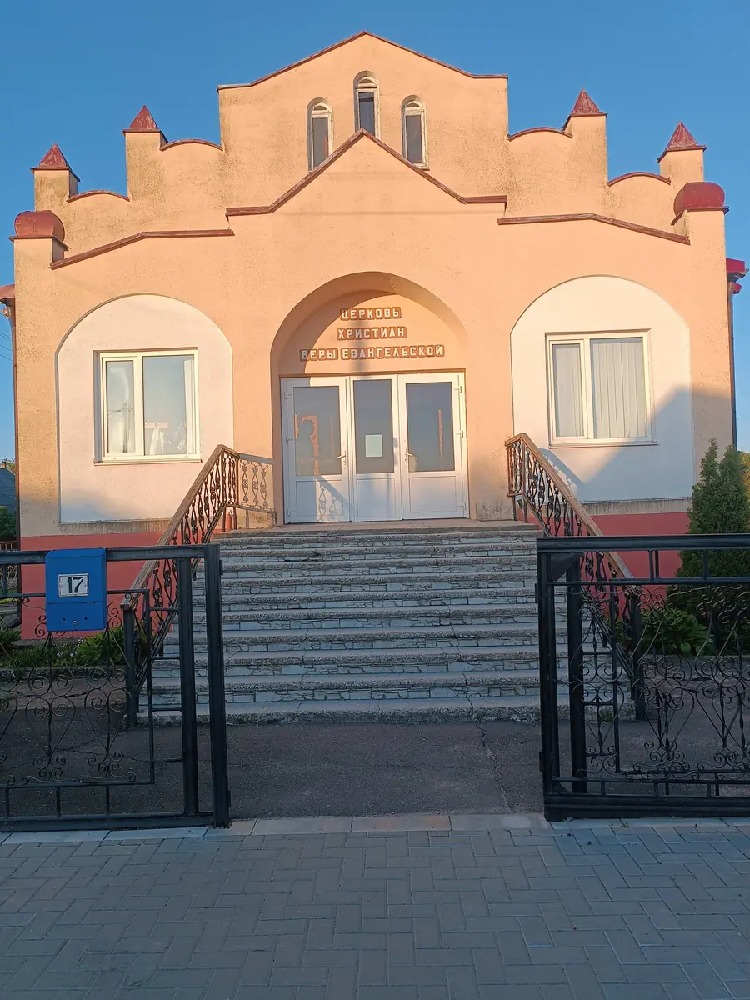
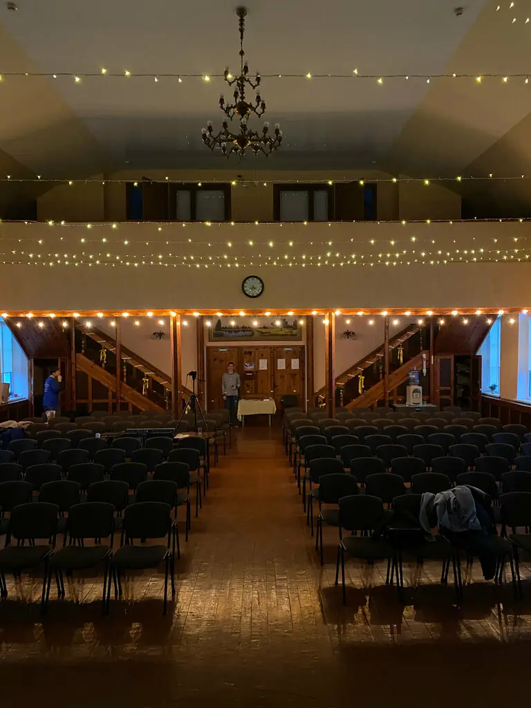

главная встреча недели
Воскресенье
10:00
Воскресное служение
Поклонение, проповедь и общение. После служения — чай и знакомства.
Быхов · Громова, 17
Церковь христиан веры евангельской · Быхов
Церковь, где вас ждут.
Мы — собрание людей разных судеб, объединённых верой в Иисуса Христа. Здесь можно задавать вопросы, учиться любить и просто быть рядом.
Воскресное служение — каждое воскресенье в 10:00. Вход свободный.


01 — О церкви
«Свет Миру» — церковь христиан веры евангельской в Быхове. Мы верим, что Бог любит каждого человека и хочет, чтобы никто не остался один.
Мы собираемся, чтобы читать Библию, молиться, петь и учиться жить по Евангелию. Не для того, чтобы казаться правильными, а чтобы быть настоящими.
Здесь рады семьям, детям, молодёжи и тем, кто только начинает искать Бога. Можно прийти одному, с вопросами и без ответов. Место найдётся.
Церковь «Свет Миру»
02 — Богослужения
Два главных богослужения и две встречи для молитвы и изучения Библии. Вход свободный — приходите, даже если вы здесь впервые.
Поклонение, проповедь и общение. После служения — чай и знакомства.
Время остановиться, услышать Слово и помолиться вместе.
Разбираем текст, задаём вопросы и учимся применять Библию.
Молимся за церковь, город, семьи и друг друга.
Если нужна помощь или не знаете, как добраться — позвоните +375 29 543 2177. Будем рады.
03 — Служения
Молодёжное и женское служения — это пространства, где можно узнать друг друга ближе, поддержать и расти в вере.
Место, где можно быть собой, задавать настоящие вопросы и найти своих.
Женское служение
Время для общения, молитвы и поддержки. Чай, разговоры и место, где можно выдохнуть.
Четверг · 18:30
04 — Видео
Записи воскресных и вечерних служений. Смотрите здесь или на YouTube-канале церкви.
Смотреть трансляциюЛакович Юлия · 22 ноября 2026
Смотреть на YouTube ↗Марковский Дмитрий · 18 ноября 2026
Смотреть на YouTube ↗05 — События
Концерты, выезды, праздники и особые встречи. Здесь появляется всё, что не входит в обычное расписание.
Особых событий пока нет. Но каждое воскресенье в 10:00 мы всё равно собираемся вместе.
06 — Атмосфера
Больше фото и видео — в @svetmiru2026.
Светит во тьме, и тьма не объяла его.Евангелие от Иоанна, 1:5
07 — Что важно
Мы не пытаемся быть идеальными. Мы учимся любить Бога и друг друга — честно, вместе и каждый день.
Библия — основа нашей веры и жизни. Мы читаем её вместе и учимся применять.
Мы верим, что Бог слышит. Молимся друг за друга и за наш город.
Церковь — это не здание, а люди. Здесь можно расти, ошибаться и начинать заново.
Каждый может быть полезен: помочь, поддержать, приготовить чай или просто быть рядом.
08 — Контакты
Быхов, улица Громова, 17. Воскресное служение — в 10:00. Если есть вопросы — позвоните.
Как добраться
Мы в центре Быхова, на улице Громова, 17. Ориентир — светлое здание церкви с большой лестницей. Если потеряетесь — позвоните, встретим.
Построить маршрут